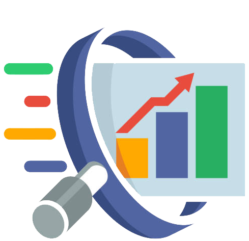

Learning Tracks
Courses & Tracks
Power BI Data Analysis
Business Intelligence & PL-300
EN
Track Curriculum & Modules
Microsoft Certified: Power BI Data Analyst
(PL-300):
- Part 1: Data ETL & Preparation with Power Query
- Part 2: Data Modeling & Advanced DAX Calculations
- Part 3: Visualizations & Executive Dashboard Design
Specialized & Fast-Track Series:
- Power BI Crash Course: Accelerated learning for quick onboarding
- Power BI for Executives: High-level business metrics & KPIs
- Introductory Presentation: Simplified BI capabilities walkthrough
AR
محتويات ومسارات التراك
المسار الاحترافي لشهادة مايكروسوفت (PL-300):
- الجزء الأول: تجهيز وتنظيف وسحب البيانات باستخدام Power Query
- الجزء الثاني: نمذجة البيانات، بناء العلاقات، ومعادلات DAX
- الجزء الثالث: تصميم التقارير ولوحات التحكم التفاعلية (Dashboards)
المسارات السريعة والمتخصصة:
- كورس سريع (Crash Course): تطبيق عملي مركز في وقت قياسي
- Power BI للمديرين: استيعاب المؤشرات واتخاذ القرارات الذكية
- جلسة تعريفية شاملة: شرح ميسر لماهية وإمكانيات ذكاء الأعمال

Mastering Data Analysis with Excel
Interactive Dashboards & DAX
EN
Business Intelligence in Excel
Core Masterclass: Data Analysis & Dashboards:
- Pivot Tables & Pivot Charts: Dynamic data summarization
- Interactive Business Dashboards: Slicers, timelines, and layout
- Data Model & Power Pivot: Working with relational data in Excel
- DAX Language in Excel: Writing measures on real business cases
Recommended Prerequisites (If needed):
- Excel for Beginners & Intermediate series to solidify foundation
AR
تحليل البيانات ولوحات القيادة بالإكسيل
الكورس الأساسي: تحليل البيانات وبناء الـ
Dashboards:
- Pivot Tables & Charts: تلخيص وتصنيف البيانات بدقة
- تصميم لوحات تفاعلية: ربط التقارير بمجزءات البيانات (Slicers)
- نموذج البيانات (Data Model): ربط عدة جداول داخل الإكسيل
- لغة DAX: كتابة المقاييس المتقدمة مع تمارين ومشاريع عملية
المتطلبات السابقة المقترحة:
- دورة المبتدئين والمتوسطين لمن يريد تثبيت أساسيات الإكسيل أولاً
Excel: From Scratch to Advanced
Foundations, Formulas & Skills
EN
Comprehensive Excel Roadmap
The Ideal Starting Point:
Perfect launchpad for accounting, engineering, analysis, or workplace productivity.
- Excel for Absolute Beginners: Grid navigation, cells, formatting & core logic
- Excel Intermediate Training: Logical functions, lookups (VLOOKUP, XLOOKUP), and data validation
- Advanced Topics & Automation: Complex formulas, nested logic, and workplace techniques
AR
المسار المتكامل للإكسيل من الصفر حتى الاحتراف
البوابة المثالية لجميع المجالات:
أنسب انطلاقة للمحاسبين، المهندسين، ومحللي البيانات، وأي شخص يستخدم الإكسيل في بيئة العمل.
- كورس المبتدئين (من الصفر): واجهة البرنامج، المعادلات البسيطة، وتنسيق الجداول
- المستوى المتوسط: دوال البحث والربط (XLOOKUP / VLOOKUP) والدوال الشرطية
- المستوى المتقدم: تركيب الدوال المعقدة، أدوات التحقق وحل مشكلات العمل اليومية
Thinking in CANDY
Project Estimation & Cost Control
EN
Construction Engineering Suite
Complete Project Management Tracks:
- Construction Estimating Basics: Setting up pricing masterfiles & bills
- Advanced Estimating Topics: Complex resource allocation & indirect costs
- Valuation & Cost Control: Progress billing, subcontracts & variance tracking
- Planning & QTO: Quantity takeoff integration & scheduling links
Micro-Learning & Skills:
- Building Skills Series: Focused bite-sized videos mastering specific tools
AR
إدارة المشروعات والتسعير الهندسي ببرنامج كاندي
المسارات المتكاملة لإدارة المشاريع الإنشائية:
- Construction Estimating Basics: أساسيات تسعير مقايسات المشاريع
- Advanced Estimating: الموضوعات المتقدمة في تحليل التكاليف والموارد
- Valuation & Cost Control: المستخلصات الشهرية ومراقبة تكاليف المشروعات
- Planning & QTO: حصر الكميات وربطه بالبرامج الزمنية
المقاطع المهارية المركزة:
- سلسلة مهارات سريعة (Building Skills): مقاطع محددة تضيف لك مهارات مباشرة
Bidbow Estimating
Project Estimation & Cost Control
EN
Engineering Tendering with Bidbow
Core Estimation Features:
- Tender Setup: Project parameters & Bill of Quantities importing
- Resource Rate Analysis: Plant, labor, and materials cost buildup
- Markup & Final Pricing: Overheads, margins, and bid generation
AR
حساب تكاليف وتسعير المشروعات ببرنامج Bidbow
محاور دورة التسعير الهندسي:
- تجهيز العطاء: إعداد بيانات المشروع واستيراد المقايسة
- تحليل الأسعار والموارد: حساب تكاليف المعدات، العمالة، والخامات
- الهوامش والمظاريف: تطبيق المصاريف غير المباشرة واستخراج العرض المالي
Mastering Database System
RDBMS & Application Architecture
EN
Database Architecture & Engineering
Core Foundations & Architecture:
- Database Fundamentals: Relational theory, ERD modeling & normalization
- Schema & Integrity: Structuring relational tables, data types & constraints
- Analytical Queries: Criteria, joins, calculated fields & SQL basics
Application Development & Automation:
- UI & System Forms: Data-entry workflows, subforms & navigation menus
- Executive Reports: Grouping, summary statistics & print-ready auditing
- Automation & Business Logic: Event-driven macros, buttons & code modules
AR
سلسلة احتراف قواعد البيانات وتطوير تطبيقات الأعمال
تأسيس قواعد البيانات والتصميم الهيكلي:
- أساسيات قواعد البيانات (Fundamentals): النمذجة (ERD)، العلاقات السليمة، وقواعد تسوية البيانات (Normalization)
- هيكلة الجداول والعلاقات: تصميم الجداول والمفاتيح الأساسية والأجنبية وضبط تكامل البيانات (Integrity)
- الاستعلامات والتحليل: استعلامات التحديد، المعايير، العمليات الحسابية ومبادئ لغة SQL
تطوير تطبيقات الأعمال والأتمتة:
- واجهات المستخدم والنماذج (Forms): تصميم شاشات إدخال تفاعلية، نماذج فرعية ولوحات تحكم
- التقارير التنفيذية (Reports): تلخيص وتجميع البيانات وتجهيز المستندات الطباعية المعتمدة
- أتمتة النظام وبرمجة العمليات: ربط الأزرار بالماكرو وبناء منطق التطبيقات الكاملة
Lean Six Sigma & Quality Excellence
Process Improvement & RCA
EN
Quality & Process Improvement
Foundations & DMAIC Principles:
- Introduction to Six Sigma: Core concepts, DMAIC phases & defect prevention
Root Cause Analysis Tools:
- Fishbone (Ishikawa) Diagram: Structured troubleshooting of process bottlenecks
AR
إدارة الجودة والتحسين المستمر
مفاهيم ومنهجيات الجودة:
- مقدمة في الستة سيجما: فهم منهجية DMAIC لتقليل العيوب وتطوير العمليات
أدوات تحليل الأسباب الجذرية:
- مخطط هيكل السمكة (Fishbone): التحليل الدقيق لجذور المشكلات وحلها عملياً
Executive Business Communication
The Art of Professional Emailing
EN
High-Impact Correspondence
The Art of Writing Professional Emails:
- Business Email Etiquette: Clarity, structure, and professional tone
- Executive Framing: Addressing leadership, managers, and clients
- Handling Delicate Scenarios: Polite escalations, follow-ups & crisp CTAs
- Mail Archiving System: Cross-platform email retention with Excel, Access & Power BI
AR
التواصل والمراسلات التنفيذية
فن كتابة الإيميلات الاحترافية:
- إتيكيت الإيميل المهني: صياغة رسائل موجزة وواضحة تضمن الاستجابة السريعة
- مخاطبة الإدارة والعملاء: الأسلوب الاحترافي في عرض التقارير والملاحظات
- إدارة المواقف الصعبة: المتابعة الدبلوماسية وصياغة طلبات الإجراءات بذكاء
- منظومة أرشفة البريد: بناء أرشيف تفاعلي للإيميلات باستخدام أدوات مايكروسوفت
Workflow Automation with Power Automate
Complex Flow Architectures
EN
Workflow Engineering & Integration
Advanced Multi-Step Architectures:
- Complex Project Automation: Designing multi-condition approval flows
- Ecosystem Integration: Connecting Forms, Emails, Excel & SharePoint
- Error Handling & Resilience: Stable execution for critical operations
AR
أتمتة وهندسة مسارات العمل
تطبيق متكامل لمشاريع معقدة:
- بناء مشروع عملي مركب: دورات موافقة وتدفق للبيانات متعددة الشروط والمهام
- تكامل المنظومة: ربط تلقائي بين الإكسيل، الإيميلات، والنماذج السحابية
- استقرار النظام: معالجة الأخطاء وضمان سير التدفق دون توقف
Web Design Foundations
Frontend & Backend Foundations
EN
Frontend & HTML5 Foundations
The Young Programmer Series:
- Semantic HTML5: Page structure, tags, and content elements
- Text & Media: Headings, paragraphs, images, and links
- Web Architecture: Tables, lists, and form inputs from scratch
AR
أساسيات تصميم صفحات الويب بـ HTML5
سلسلة المبرمج الصغير والتأسيس:
- بنية صفحات الويب: المفاهيم الأولية، وسم الدوكتايب، وهيكلة الصفحة
- العناصر والوسائط: تنسيق النصوص، إدراج الصور، والروابط التشعبية
- الجداول والنماذج: تنظيم البيانات وبناء شاشات الإدخال التفاعلية
Custom Software Solutions
Enterprise & Clinic Apps
EN
Applied Software & Systems
Healthcare & Clinic Solutions:
- DentiCare System: Complete management application for dental clinics and patient records
- Operational Workflows: Appointments, treatment billing, and clinical histories
AR
حلول وبرمجيات مخصصة للأنشطة
برامج إدارة العيادات والمراكز:
- برنامج DentiCare: منظومة تطبيقية متكاملة لإدارة عيادات ومراكز الأسنان
- الوظائف التشغيلية: تنظيم الحجوزات، ملفات المرضى، والحسابات والفواتير الطبية